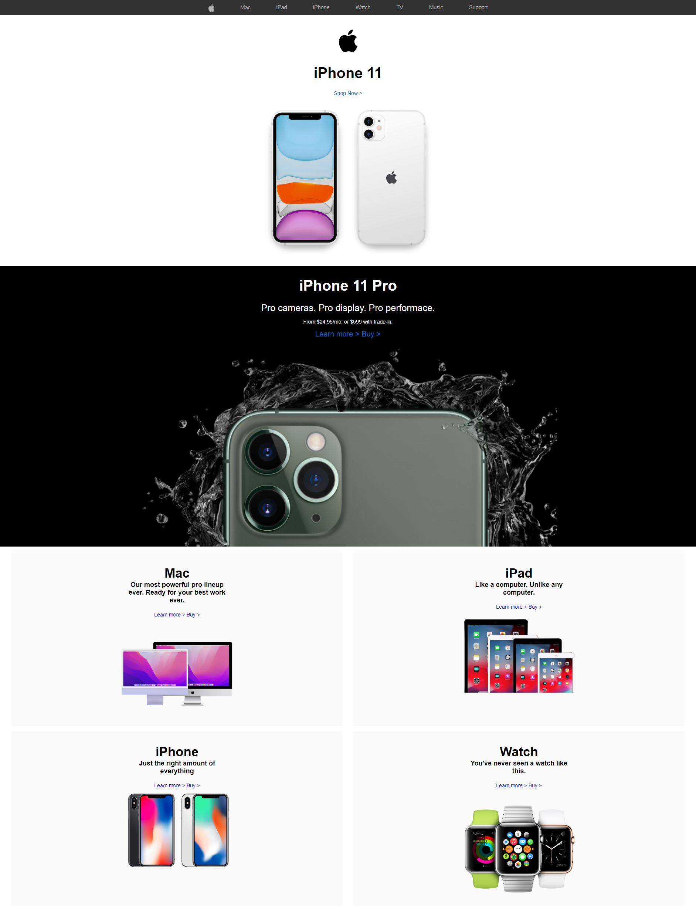

Assignment 3: UI Design Implementation
|
Weight: 15% of the final grade Objective: In this assignment, you will apply your web development skills to implement a user interface (UI) design provided to you. Your task is to create a responsive webpage that replicates the given UI design as closely as possible. |
Instructions:
Part 1: Design Overview
-
You will be provided with a UI design mockup. Carefully study the design to understand its layout, color scheme, typography, and overall structure.
-
Review any accompanying instructions or requirements provided along with the design.
Part 2: Web Development
-
Create a new folder on your computer for this assignment and name it appropriately.
-
Inside the folder, create the following files and directories:
index.html: This will be your main HTML file.css/: Create a directory to store your CSS files.images/: Create a directory to store any images used in the design.
-
Implement the HTML structure based on the provided design. Pay close attention to the layout and structure of elements. Ensure that the webpage is semantic and accessible.
-
Create the necessary CSS rules to style your webpage according to the design. Use external CSS files and make sure your CSS is well-organized.
-
Use the images provided to you to replicate any visual elements from the design, such as logos, background images, or icons.
-
Implement responsiveness using media queries to ensure that your webpage looks and functions well on various screen sizes, including mobile devices.
Part 3: Testing and Debugging
-
Test your webpage in different web browsers to ensure cross-browser compatibility.
-
Verify that your webpage behaves as expected on various devices and screen sizes.
-
Debug any issues that may arise during testing.
Part 4: Submission
-
For this assignment you can work in pairs.
- This assignment will be uploaded to GitHub to track your modifications and commits and we will use GitHub pages to view it.
Grading Criteria:
Your assignment will be graded based on the following criteria:
-
Faithfulness to Design: How closely your webpage replicates the provided UI design.
-
HTML Structure: The use of semantic HTML elements and the overall structure of your HTML.
-
CSS Implementation: The quality of your CSS code, including organization and adherence to the design's styling.
-
Responsiveness: How well your webpage adapts to different screen sizes and devices.
-
Cross-Browser Compatibility: Ensuring that your webpage works correctly in various web browsers.
-
Overall Presentation: The overall visual appeal and presentation of your webpage.
The page should be a copy of the following:

| Nova Scotia Community College - Assignments |